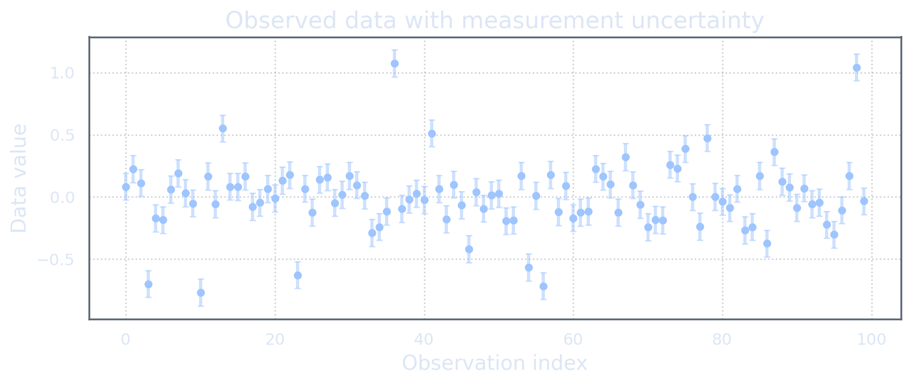
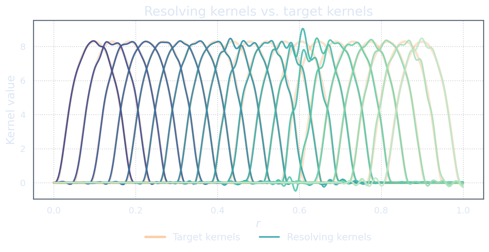
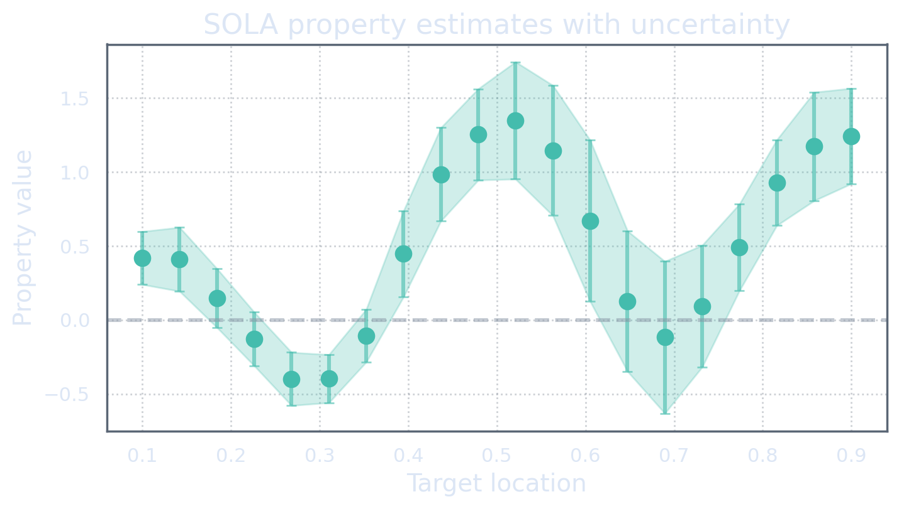
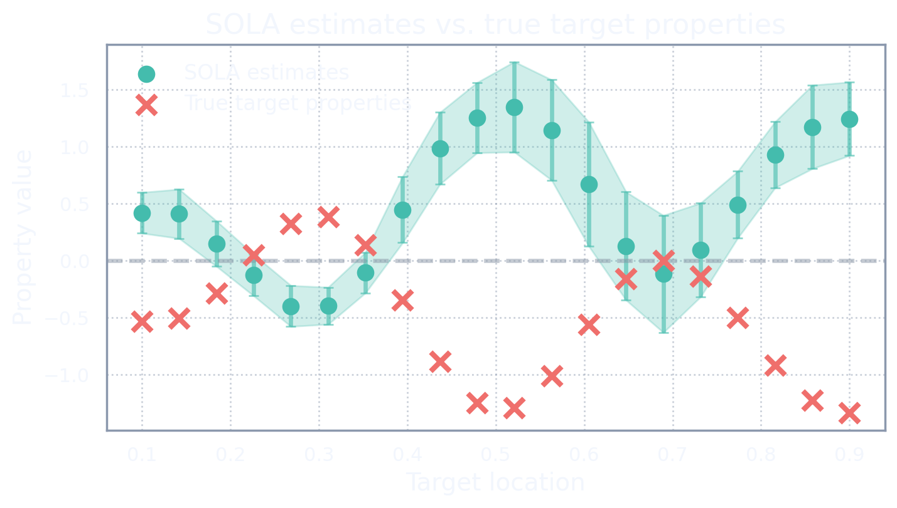
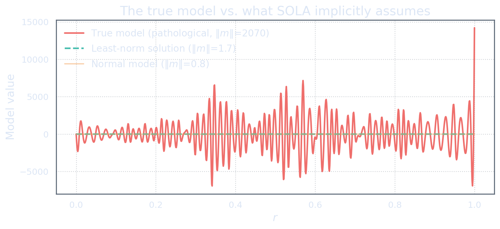

The First Test
Up to this point, we have been building SOLA. We laid out the kernel game, constructed the matrix, added normalization and noise, and carefully examined what the method actually estimates. Throughout, the tone has been constructive — here is how it works, here is what it does well.
SOLA is a relatively young method with considerable ambitions. It promises to deliver localized, interpretable properties of an unknown model directly from data, without first reconstructing the model itself. That is an attractive promise. The advertised advantages are clear and compelling: no need for prior information about the model, built-in uncertainty quantification through propagated noise covariance, and user-controlled resolution through the choice of target kernels. These are not minor features — they are the central pillars on which the case for SOLA rests. A method that needs no priors, reports its own uncertainty, and lets the practitioner choose what to resolve sounds almost too good to be true.
And yet, because SOLA is not yet widely known, it has not been subjected to the kind of stress testing that older methods — least squares, least norm, regularization — have long since absorbed. Those methods carry visible marks from decades of scrutiny. Their shortcomings are well known, not because they are obvious, but because they were found the hard way: through hard cases, failures, and the slow accumulation of boundaries that define where a method can be trusted and where it cannot.
What follows is that kind of test for SOLA. Not an attack — an examination. We will build a problem where SOLA looks good by every standard diagnostic, and then we will show that a naive yet intuitive interpretation of its output can fail catastrophically. The point is not to break SOLA. The point is to find where its boundaries are, so that it can be used with eyes open.
A Standard SOLA Problem
The setup
Let us build a synthetic example. The model space is \(\M=L^2([0,1]),\) the data space is \(\D\simeq\mathbb R^{100},\) and the property space is \(\Pspace\simeq\mathbb R^{20}.\)
The forward map \(G:\M\to\D\) has one hundred sensitivity kernels \(K_1,\dots,K_{100}\in\M.\) The target map \(\Tau:\M\to\Pspace\) has twenty localized averaging kernels \(T_1,\dots,T_{20}\in\M,\) each normalized so that \(\int_0^1 T_k(r)\dd r=1.\) Each target property \([\Tau(m)]_k=(T_k,m)_{\M}\) is intended to represent a localized average of the model near a chosen location.
The observed data are \[\widetilde{\mathbf d} = G(\bar m)+\boldsymbol\eta, \qquad \boldsymbol\eta\sim \mathcal{N}(\mathbf 0,\mathbf C_D),\] where \(\bar m\) is the unknown true model and \(\mathbf C_D\) is the known data-noise covariance. The noise level is about \(10\%\) of the maximum data amplitude.

At this stage, nothing is unusual. We have data, uncertainty, sensitivity kernels, and target kernels. A perfectly ordinary inverse problem. If this were a real application, this is where the analysis would begin — and, all too often, where critical questions about interpretation would be set aside in favour of producing numbers.
Solving it
We construct the constrained noise-aware SOLA matrix \(\widetilde{\mathbf X}_c:\D\to\Pspace\) as in the previous acts, with the noise-aware Gram matrix \(\mathbf M=GG^*+\mathbf C_D\) and the unimodularity constraint \(\mathbf X\mathbf v=\mathbf w.\) The SOLA estimate is \(\widetilde{\mathbf p} = \widetilde{\mathbf X}_c\widetilde{\mathbf d},\) with propagated covariance \(\mathbf C_P = \widetilde{\mathbf X}_c\mathbf C_D\widetilde{\mathbf X}_c^*.\)
The resolving kernels \(R_k = \sum_{i=1}^{N_d}[\widetilde{\mathbf X}_c]_{ki}K_i\) are shown against the target kernels in the next figure.

The resolving kernels are localized near the intended targets. They have broadly similar shape and width. The average misfit between resolving and target kernels is about \(2\%,\) the worst case about \(6\%.\) By any conventional diagnostic, this is a good SOLA calculation. The resolving kernels pass the usual visual sniff test.
The SOLA estimates with their \(\pm2\sigma\) uncertainty bands look like this:

If we were to stop here — and in many practical settings, this is exactly where the analysis stops — the conclusion would be that SOLA has performed well. The data look reasonable. The resolving kernels look good. The uncertainty bands are computed by the standard covariance propagation formula. The estimates form a coherent spatial pattern. There is nothing in this picture that would cause alarm.
The data look reasonable. The resolving kernels look good. The uncertainty bands are computed by the standard covariance propagation formula. By every conventional diagnostic, this is a successful SOLA calculation.
And in one sense, it is. The method has done exactly what it was designed to do: produce resolving kernels close to the targets, with modest propagated uncertainty. The question now is not whether SOLA worked. The question is what we think these numbers mean — and whether that belief is justified.
So What Do We Think?
Here is where one's instincts kick in. We see twenty property estimates, each with a modest uncertainty bar, each corresponding to a localized average of the model. The resolving kernels look like the target kernels. The natural temptation is to read these numbers as estimates of the true target properties \([\Tau(\bar m)]_k = (T_k,\bar m)_{\M}\) and to start imagining what the true model looks like.
Perhaps the model has a smooth profile. Perhaps it rises here and falls there. The SOLA estimates suggest certain values at certain locations, and the uncertainty bands tell us how much to trust each one. We might even start sketching a rough model in our heads — a profile that rises where the estimates rise, falls where they fall, and stays within the bounds where the uncertainty is small.
This is a perfectly natural interpretation. It is also the interpretation we are about to challenge.
The Reveal
Now we reveal the true target properties \(\bar{\mathbf p} := \Tau(\bar m).\) In a real inverse problem, we would not have these. But this is a synthetic example, so we can look.

The true target properties are not just far from the SOLA estimates. They are approximately the negative of the SOLA estimates. The correlation between the estimates and the truth is about \(-0.99.\) Almost every single true property lies far outside the nominal \(\pm2\sigma\) uncertainty bands.
This is the first blow. The resolving kernels looked good. The calculation was algebraically correct. The uncertainty bands were propagated by the standard formula. Every conventional diagnostic gave the green light. Yet the true target properties are the opposite of what SOLA reported.
A good-looking resolving-kernel plot does not, by itself, guarantee that \(\Tau(\bar m)\) is close to \(\mathcal{A}(\bar m).\) The true model still matters.
And here is the deeper point: we could cook up a problem where the true properties look like whatever we want. A heart shape. A straight line. A random scatter. The SOLA estimates would not change, because they depend only on the data, and the data are the same in every case. There is a deep and complete disconnect between what we want to find and what we actually find.
The True Model
At this point, curiosity naturally turns to what the true model actually looks like. Let us show it.

The true model looks wild. It oscillates rapidly with huge amplitude. Its norm is about \(2070\), while a least-norm solution has norm about \(1.7.\) Both models produce exactly the same data.
Pushing Back
At this point, one might object: you picked a ridiculous true model!
And that is exactly the point. The model is ridiculous — but SOLA does not know that. SOLA makes no prior assumptions about the model. It does not assume smoothness, boundedness, or physical plausibility. The model fits the data. It produces the SOLA solution shown above. The resolving kernels are quite nice. There is no internal contradiction anywhere in the calculation. The only thing that makes the model ridiculous is a belief that true models do not look like this — and that belief, however well-founded, is model-side information that SOLA does not use.
This is not a trick or a pathology in the method. It is a boundary. Least squares and least norm have well-known boundaries of this kind — everyone knows that least squares is sensitive to outliers, that least norm says nothing about models in the data nullspace. These limitations are not held against those methods. They are understood, stated, and worked around. They are the marks left by hard cases that were once new and surprising. SOLA has not yet accumulated those marks, because it has not yet been tested this way in public. (The mathematics of the boundary itself is thoroughly documented: what finite, inaccurate data can never determine is the founding theme of [BG70].)
So let us be precise about what the objection is really saying. If one believes that the true model cannot look like this — that models do not oscillate with amplitude \(2000\) — then one has model-side information. That belief is a prior. It is potentially correct, but it should not be silently smuggled into the interpretation.
If one believes the true model cannot look a certain way, make that belief mathematical. Use it as a prior. Then we can put actual bounds on the true properties using the actual target kernels.
Indeed, if one is willing to state that \(\|\bar m\|\le B\) for some bound \(B,\) then the target-kernel interpretation error \([\Tau(\bar m)]_k-[\mathcal{A}(\bar m)]_k = (T_k-R_k,\bar m)_{\M}\) is bounded by \(\|T_k-R_k\|_{\M}\,\|\bar m\|_{\M} \le B\,\|T_k-R_k\|_{\M}.\) When the resolving kernels are close to the targets, this bound can be useful. But without such a bound on the model, the error is unbounded.
How to Manufacture the Discrepancy
The construction
The trick is simple. We begin with an ordinary-looking model \(m_n\in\M\) with moderate norm, such as \[m_n(r) = \exp\left(-\left(\frac{r-0.5}{0.5}\right)^2\right) \sin(5\pi r)+r.\] This model generates the data \(\bar{\mathbf d}=G(m_n)\) and has target properties \(\mathbf p_n=\Tau(m_n).\)
Then we construct a different model \(\bar m\) that produces the same data but has opposite target properties: \[G(\bar m)=\bar{\mathbf d}, \qquad \Tau(\bar m)=-\mathbf p_n.\]
Such a model exists because \(\M\) is infinite-dimensional while the constraints are finite-dimensional. The construction uses the stacked operator \[\mathcal G := \begin{bmatrix} G\\ \Tau \end{bmatrix} : \M\to \D\oplus\Pspace,\] and solves \[\mathcal G(\bar m) = \begin{bmatrix} \bar{\mathbf d}\\ -\mathbf p_n \end{bmatrix}.\]
The resulting model \(\bar m\) fits the data exactly but has a huge norm, because it contains a large component in a data-invisible direction.
Invisible to data, visible to properties
Let \(h:=\bar m-m_n.\) Then \(G(h)=G(\bar m)-G(m_n)=\mathbf 0,\) so \(h\in\kernel(G).\) But \(\Tau(h)=\Tau(\bar m)-\Tau(m_n) = -\mathbf p_n-\mathbf p_n = -2\mathbf p_n.\) Thus \(h\) is invisible to \(G\), but visible to \(\Tau\).
The resolving map \(\mathcal{A}=\mathbf XG\) cannot see \(h\), because \(\mathcal{A}(h)=\mathbf XG(h)=\mathbf X\mathbf 0=\mathbf 0.\) But the target map \(\Tau\) sees \(h\): \(\Tau(h)\neq\mathbf 0.\) Therefore \(\mathcal{A}(m+h)=\mathcal{A}(m),\) while \(\Tau(m+h)\neq\Tau(m).\)
Indeed, for \(m_\alpha=m+\alpha h,\) we have \(G(m_\alpha)=G(m)\) for every scalar \(\alpha\), but \(\Tau(m_\alpha)=\Tau(m)+\alpha\Tau(h).\) The target property can be moved arbitrarily far while the data remain fixed.
The data closed one eye. The target property looked exactly where that eye was blind.
What to Take Away
One might say: fine, I will interpret my results through the resolving kernels, not the target kernels — that is a legitimate position. SOLA does estimate the resolving-kernel properties \(\mathcal{A}(\bar m)\) correctly, up to propagated data noise. The resolving kernels are honest. The method is not broken. It has done exactly what it was designed to do. Reading the outputs through the resolving kernels is exactly the practice recommended in the tomography literature [ZKL17].
But the gap between \(\mathcal{A}(\bar m)\) and \(\Tau(\bar m)\) is \((T_k-R_k,\bar m)_{\M},\) and without model-side information, this gap is unbounded. The uncertainty bands quantify data noise only. They do not quantify the interpretation gap. A resolving-kernel plot that looks good does not, by itself, close that gap.
This is a boundary, not a failure. Least squares has known boundaries — sensitivity to outliers, sensitivity to ill-conditioning. Least norm has known boundaries — nullspace invisibility, prior dependence. These boundaries were once discoveries, found the hard way. They are now part of the working knowledge of anyone who uses those methods. SOLA's boundary is the same in spirit: without model-side information, the target-kernel interpretation is a leap of faith, not a mathematical conclusion.
SOLA estimates resolved properties. If we want exact target properties, we need additional model-side information that rules out, or at least controls, the dangerous invisible directions. Finding this boundary is not an attack on the method — it is the beginning of knowing where it can be trusted.
References
- George Backus and Freeman Gilbert (1970). “Uniqueness in the Inversion of Inaccurate Gross Earth Data.” Philosophical Transactions of the Royal Society A 266(1173), 123–192. Nonuniqueness under finite, inaccurate data: the boundary this act dramatizes. doi:10.1098/rsta.1970.0005
- Christophe Zaroli, Paula Koelemeijer, and Sophie Lambotte (2017). “Toward Seeing the Earth’s Interior Through Unbiased Tomographic Lenses.” Geophysical Research Letters 44(22). The resolving-kernel reading of SOLA outputs. doi:10.1002/2017GL074996